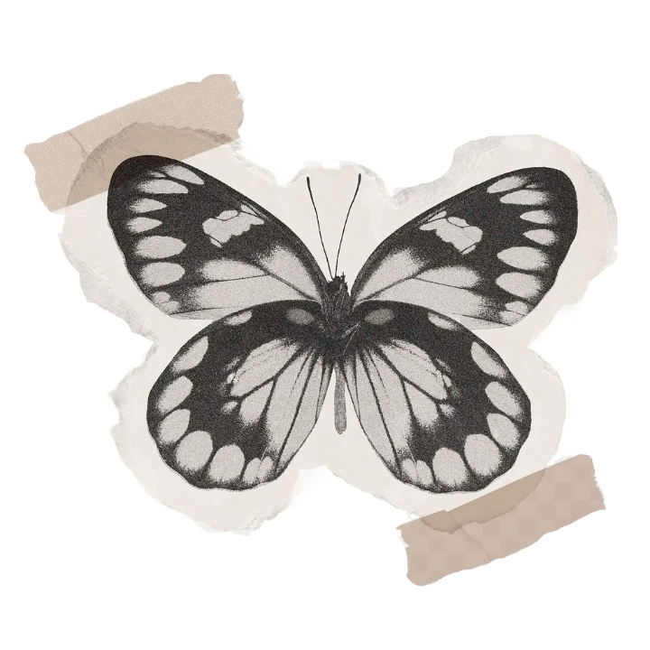
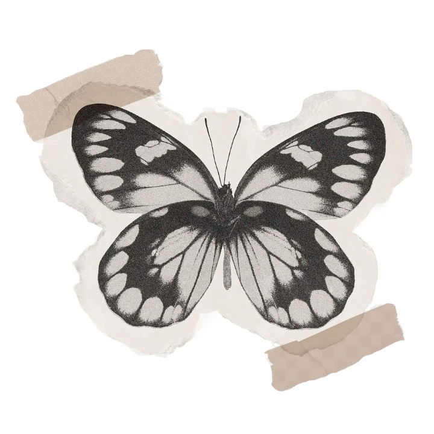

This page is a collection of videos I made to explore the technical skills and concepts of video creation. I focused on experimenting with different video compositions and worked on improving the technical and aesthetic qualities of my videos. These videos were made for my Web Video class (CTK 330).
 
